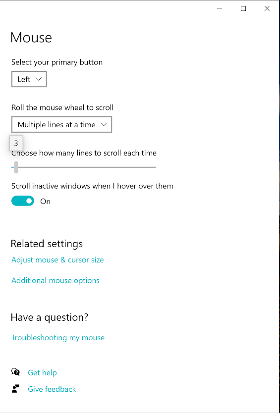
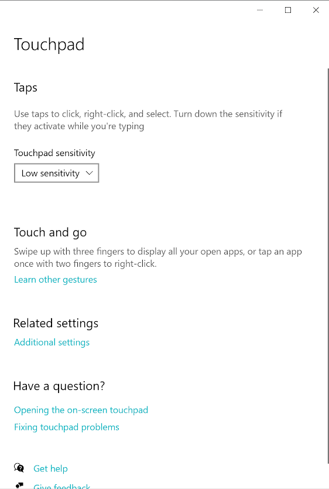

COMP171 Human Computer Interaction Spring 2020
Experiment - Group 2
In this experiment, we will be testing two interaction techniques: scrolling with a keyboard's arrow buttons and scrolling using a computer's trackpad. You will be given additional instructions on the following pages. Before you start, make sure that you have a Windows computer, and that your Touchpad and Mouse settings match what is below. When all of your settings match, click on the "Start the Experiment" button below.
 